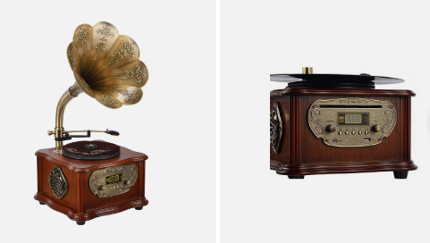
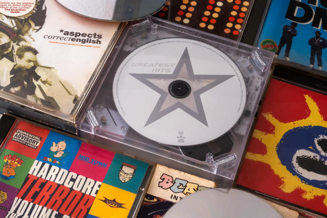
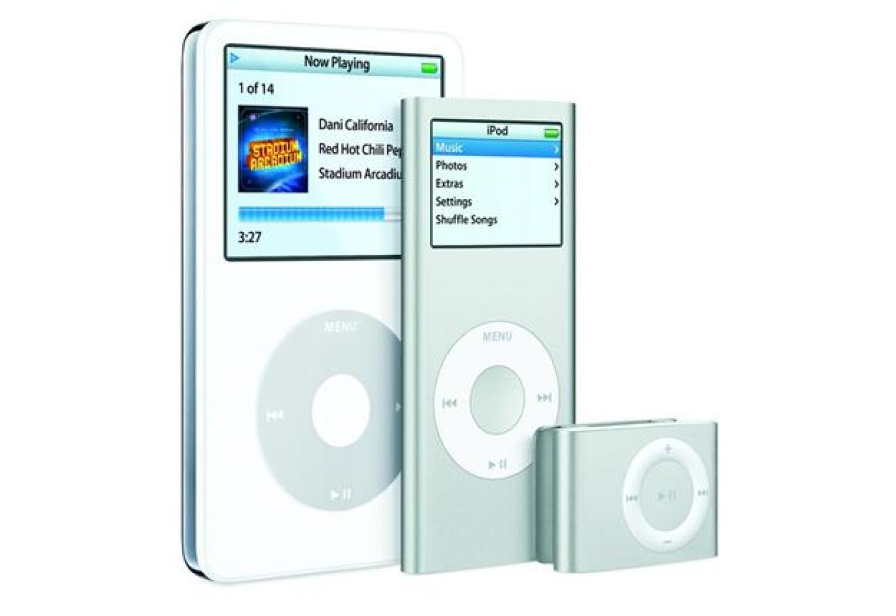

Devices used in the past
CLICK DOWN
Phonograph
Invented in 1877 by Thomas Edison, was the first music player to release sound in form of music.
Electric Record Player
Invented in 1925

Compact Cassettes
Invented in 1964
Began in Germany

CD's
Invented in 1976
Walkman
Invented in 1979
portable casstte player
iPod
invented in 2001 by Apple Inc.
